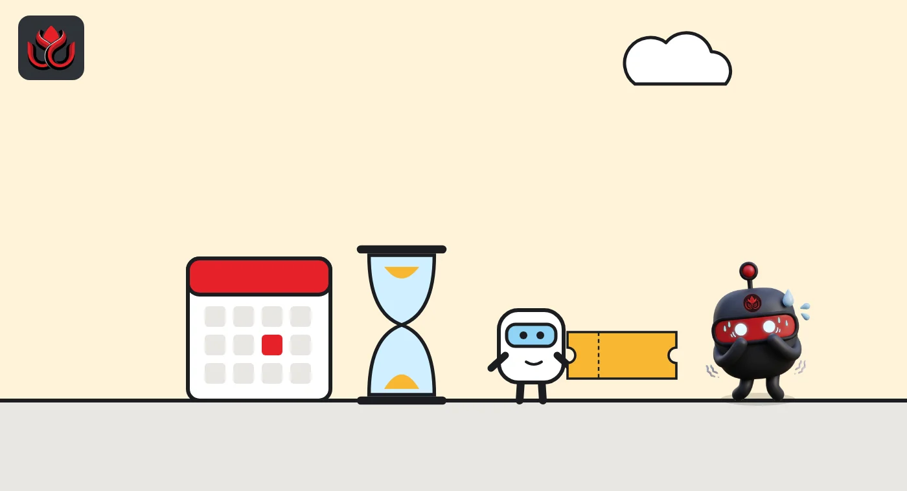
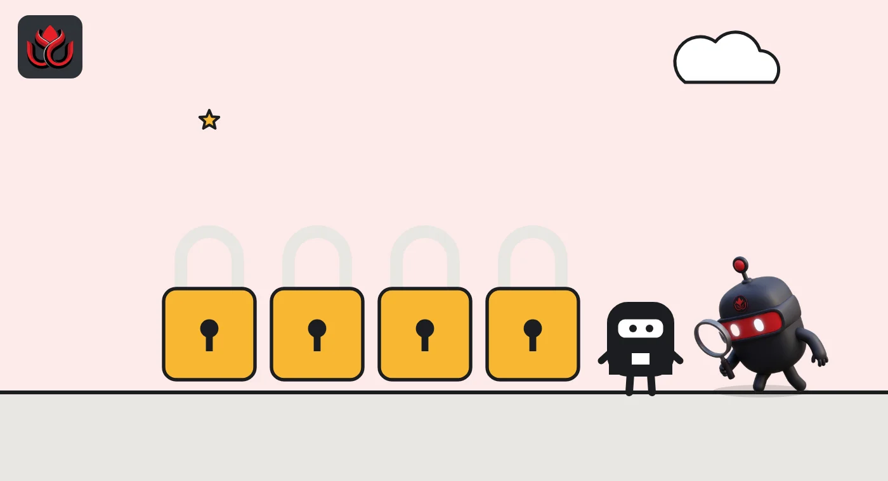

Polymarket US quits sports contracts in Michigan. Open bets must close by November 25
After losing two bids in federal court, Polymarket's US arm agreed to stop selling new sports event contracts to Michigan residents. It is the fourth big platform, after Coinbase, Robinhood and Kalshi, that the state has halted.
Key points
- Polymarket US agreed to stop offering new sports event contracts to Michigan customers, the state's gaming regulator said on October 28, 2026.
- Michigan residents must close open contracts by the end of November 25, 2026, Eastern time, or Polymarket US will close them.
- Coinbase, Robinhood, Kalshi and now Polymarket US have all been halted in Michigan by agreement or court order.
The deal
Polymarket's US business has agreed to stop offering new sports event contracts in Michigan, the state's gaming regulator said on October 28, 2026. Open positions must be closed by November 25. The entity is QCX LLC, which does business as Polymarket US, according to the Michigan Gaming Control Board (MGCB).
Event contracts are simple yes-or-no trades on an outcome, for example whether a team wins a game. Prediction market operators say these are federally regulated financial products. Michigan says that, when they are about sports, they are sports bets that need a state license.
Under the deal, Polymarket US may not list new sports-related contracts for Michigan customers. Any open contracts held by Michigan residents must be closed by the end of the day on November 25, 2026, Eastern time (11:59 p.m. ET). If a customer has not closed out by then, Polymarket US must do it. The US District Court for the Western District of Michigan approved the agreement. In return, the state will not take enforcement action as long as Polymarket US complies.
What Michigan users need to do
Michigan users can no longer open new sports positions on Polymarket US. They can close the positions they already hold themselves at any time before the deadline. Anything still open at the end of November 25 will be closed by Polymarket US, on its timing rather than the customer's.
The ban on new listings covers sports-related contracts. The closure requirement, as the MGCB describes it, applies to open contracts held by Michigan residents. Customers with positions on other topics should check the platform's notices for how the deadline applies to them.

Two court losses first
Polymarket did not give up quickly. The MGCB release sets out a fight that ran most of the year:
- In March 2026, Polymarket US sued Michigan officials in federal court to block enforcement of the state's gaming laws.
- The court denied Polymarket's request for a temporary restraining order that month.
- In June 2026, the court also denied its motion for a preliminary injunction. Polymarket appealed to the Sixth Circuit, and that appeal is still pending.
- On September 10, 2026, the Michigan Department of Attorney General warned Polymarket US it would take legal action if the company kept offering sports contracts to residents.
The agreement came about seven weeks after that warning.
Four platforms halted
Michigan has used the same approach against several large players. The state had already reached similar agreements with Coinbase Financial Markets and Robinhood Derivatives, and it won a preliminary injunction in state court against KalshiEX, the regulator said. The release describes these products as sports wagering dressed up as federally regulated prediction markets.
MGCB Executive Director Henry Williams said Polymarket was joining the others in "stepping back from these unlicensed sports contracts." He added that anyone who wants to take sports wagers from Michigan residents needs a Michigan license.

The bigger fight with Washington
Michigan is one front in a wider battle between states and federal regulators. The CFTC says it has started legal proceedings against 10 states, most recently Utah on October 27, 2026, and has filed briefs in four federal appeals courts and one state supreme court, according to its release. The agency argues federal law gives it sole authority over these markets.
Results in court have been mixed. On October 2, 2026, a federal judge in Illinois found that many sports contracts listed by Kalshi are likely swaps under federal law and partly blocked Illinois from enforcing its licensing rules against them, her opinion shows. Michigan's federal court, by contrast, refused to give Polymarket the same kind of early relief.
The CFTC is also trying to settle the question by rule. On October 9, 2026, it proposed to define "swap" to expressly include event contracts tied to sports, politics, culture and weather, the CFTC said. Until courts or a final rule decide the issue, platforms face a patchwork: allowed in some states, blocked or settled out in others.
Timeline
Polymarket US sues Michigan officials in federal court; restraining order denied
Court denies Polymarket's motion for a preliminary injunction; appeal to Sixth Circuit follows
Michigan Attorney General warns Polymarket US of legal action
Illinois federal judge partly blocks state enforcement against Kalshi contracts
MGCB announces court-approved agreement with Polymarket US
Deadline to close open Michigan positions
LC Insight analysis
This section is our reading of the facts above, not a statement of fact.
- We think Michigan has built a template other states will copy: sue or threaten, win early rulings, then settle with a court-approved exit. It costs the state little and removes the product fast.
- For Polymarket US, sports, a key US growth line, now looks like a state-by-state map rather than one national product, at least until the Sixth Circuit or a higher court rules.
- Michigan and Illinois judges reading the same law differently is exactly why the CFTC wants a formal rule. Until then, platforms will price legal risk state by state.
What's next
- The Sixth Circuit ruling on Polymarket's appeal
- Whether other states use the same court-approved agreement model
- Polymarket's handling of forced closures after November 25
Disclaimer. This article is based on public information and the sources listed below as of the update time shown. It is for information only and is not investment, legal or tax advice. Figures may change as companies and authorities publish new data.
Sources
- Michigan Gaming Control Board, Polymarket backs down as Michigan's crackdown on unlicensed sports betting continues (October 28, 2026)
- CFTC, Release 9315-26, lawsuit against Utah (October 27, 2026)
- CFTC, Release 9310-26, event contracts proposal (October 9, 2026)
- US District Court, N.D. Illinois, KalshiEX LLC v. Raoul, Memorandum Opinion and Order (October 2, 2026), via CourtListener